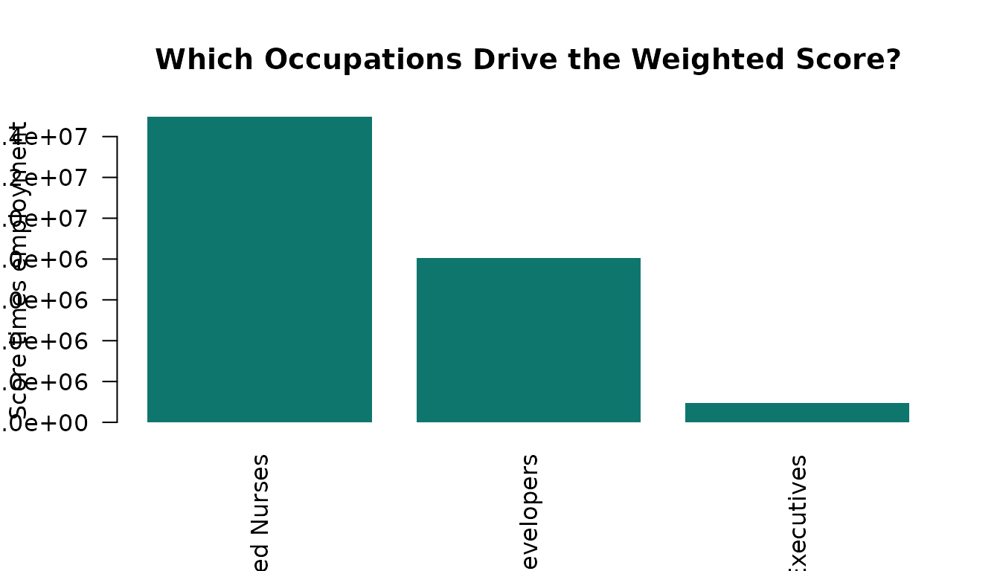

Adding OEWS Wage and Employment Context
Source:vignettes/oews-wage-context.Rmd
oews-wage-context.RmdO*NET tells you what occupations do: their tasks, abilities, skills, knowledge, and work contexts. The Bureau of Labor Statistics Occupational Employment and Wage Statistics (OEWS) program tells you how large those occupations are in the labor market and what they pay. Joining the two lets you move from an occupation-level descriptor table to a labor-market-weighted question.
This walkthrough asks: among occupations in a small O*NET ability panel, what does a national employment-weighted ability score look like, and what changes if we use a custom PUMS-style population instead?
Read OEWS Estimates
onet_oews_national() normalizes BLS OEWS files into
snake_case columns and parses formatted employment and wage fields into
numeric values.
oews <- onet_oews_national(year = 2024, path = sample_oews)
oews |>
select(occ_code, occ_title, tot_emp, a_median, h_median) |>
print(width = Inf)
#> # A tibble: 3 × 5
#> occ_code occ_title tot_emp a_median h_median
#> <chr> <chr> <dbl> <dbl> <dbl>
#> 1 15-1252 Software Developers 1847900 133080 64.0
#> 2 29-1141 Registered Nurses 3175400 93070 44.8
#> 3 11-1011 Chief Executives 211230 206680 99.4Build a Reference-SOC Weight Panel
OEWS uses 6-digit SOC codes. O*NET archive tables use 8-digit O*NET-SOC detail codes. The weight-panel helper records the source and reference taxonomy so the join is auditable.
oews_weights <- onet_weight_panel_oews(oews, year = 2024)
oews_weights |>
print(width = Inf)
#> # A tibble: 3 × 7
#> reference_soc_code year employment weight_share source source_taxonomy
#> <chr> <int> <dbl> <dbl> <chr> <chr>
#> 1 11-1011 2024 211230 0.0404 OEWS 2018 SOC
#> 2 15-1252 2024 1847900 0.353 OEWS 2018 SOC
#> 3 29-1141 2024 3175400 0.607 OEWS 2018 SOC
#> reference_taxonomy
#> <chr>
#> 1 2018 SOC
#> 2 2018 SOC
#> 3 2018 SOCGet O*NET Occupation Scores from an Archive
The occupation scores below come from
onet_archive_read(), not a hand-built example table. We use
Oral Comprehension as a concrete descriptor because it is available in
the bundled fixture.
abilities <- onet_archive_read(
"30.3",
"Abilities",
path = archive_303,
release_date = "2026-05-01"
)
oral_scores <- abilities |>
filter(element_id == "1.A.1.a.1") |>
transmute(
onet_soc_code,
title,
measure_score = data_value
)
oral_scores |>
print(width = Inf)
#> # A tibble: 4 × 3
#> onet_soc_code title measure_score
#> <chr> <chr> <dbl>
#> 1 15-1252.00 Software Developers 4.35
#> 2 29-1141.00 Registered Nurses 4.71
#> 3 11-1011.00 Chief Executives 4.5
#> 4 41-1011.00 First-Line Supervisors of Retail Sales Workers 4.15Aggregate with OEWS Employment
oral_oews <- onet_measure_aggregate(
oral_scores,
oews_weights,
measure_id = "oral_comprehension_fixture"
)
oral_oews |>
select(-coverage, -provenance) |>
print(width = Inf)
#> # A tibble: 1 × 7
#> measure_id aggregate total_employment covered_employment
#> <chr> <dbl> <dbl> <dbl>
#> 1 oral_comprehension_fixture 4.57 5234530 5234530
#> employment_coverage_share n_occupations n_reference_soc
#> <dbl> <int> <int>
#> 1 1 4 4
onet_provenance(oral_oews)
#> # A tibble: 1 × 7
#> measure_id weight_source weight_year source_taxonomy reference_taxonomy
#> <chr> <chr> <int> <chr> <chr>
#> 1 oral_comprehensi… OEWS 2024 2018 SOC 2018 SOC
#> # ℹ 2 more variables: bridge_used <lgl>, crosswalk_path <chr>The aggregate is the employment-weighted score for occupations covered by both the O*NET fixture and the OEWS sample. Coverage tells you how much of the weight panel was included.
onet_coverage(oral_oews)
#> # A tibble: 1 × 6
#> measure_id total_employment covered_employment employment_coverage_…¹
#> <chr> <dbl> <dbl> <dbl>
#> 1 oral_comprehension… 5234530 5234530 1
#> # ℹ abbreviated name: ¹employment_coverage_share
#> # ℹ 2 more variables: n_occupations <int>, n_reference_soc <int>Inspect Occupation Contributions
contributions <- oral_scores |>
mutate(reference_soc_code = sub("\\.\\d{2}$", "", onet_soc_code)) |>
inner_join(oews_weights, by = join_by(reference_soc_code), relationship = "many-to-one") |>
mutate(weighted_score = measure_score * employment) |>
arrange(desc(weighted_score)) |>
select(title, reference_soc_code, measure_score, employment, weight_share, weighted_score)
contributions |>
print(width = Inf)
#> # A tibble: 3 × 6
#> title reference_soc_code measure_score employment weight_share
#> <chr> <chr> <dbl> <dbl> <dbl>
#> 1 Registered Nurses 29-1141 4.71 3175400 0.607
#> 2 Software Developers 15-1252 4.35 1847900 0.353
#> 3 Chief Executives 11-1011 4.5 211230 0.0404
#> weighted_score
#> <dbl>
#> 1 14956134
#> 2 8038365
#> 3 950535
barplot(
height = setNames(contributions$weighted_score, contributions$title),
col = "#0f766e",
border = NA,
las = 2,
ylab = "Score times employment",
main = "Which Occupations Drive the Weighted Score?"
)
Compare OEWS with a PUMS-Style Weight Panel
OEWS is the right default for official occupation employment and wage context. PUMS-derived weights are useful when the target population is a custom sample, geography, or demographic cell.
pums <- tibble::tibble(
SOCP = c("151252", "151252", "291141", "291141", "111011"),
PWGTP = c(120, 80, 90, 110, 20),
sex = c("F", "M", "F", "M", "F")
)
pums_weights <- onet_weight_panel_pums(
pums,
year = 2022,
group = "sex"
)
pums_weights |>
print(width = Inf)
#> # A tibble: 5 × 8
#> reference_soc_code sex year employment weight_share source source_taxonomy
#> <chr> <chr> <int> <dbl> <dbl> <chr> <chr>
#> 1 11-1011 F 2022 20 0.0476 PUMS 2018 SOC
#> 2 15-1252 F 2022 120 0.286 PUMS 2018 SOC
#> 3 15-1252 M 2022 80 0.190 PUMS 2018 SOC
#> 4 29-1141 F 2022 90 0.214 PUMS 2018 SOC
#> 5 29-1141 M 2022 110 0.262 PUMS 2018 SOC
#> reference_taxonomy
#> <chr>
#> 1 2018 SOC
#> 2 2018 SOC
#> 3 2018 SOC
#> 4 2018 SOC
#> 5 2018 SOCBecause this PUMS-style panel has cells, pick one cell before aggregating.
oral_pums_f <- onet_measure_aggregate(
oral_scores,
pums_weights,
measure_id = "oral_comprehension_fixture",
cell = list(sex = "F")
)
tibble::tibble(
weight_source = c("OEWS national", "PUMS-style F cell"),
aggregate = c(oral_oews$aggregate, oral_pums_f$aggregate),
coverage = c(
oral_oews$employment_coverage_share,
oral_pums_f$employment_coverage_share
)
)
#> # A tibble: 2 × 3
#> weight_source aggregate coverage
#> <chr> <dbl> <dbl>
#> 1 OEWS national 4.57 1
#> 2 PUMS-style F cell 4.50 1The point is not that one source is always better. OEWS gives official labor market estimates. PUMS gives custom cells. The package makes the weight source, year, taxonomy, and coverage explicit so readers can see what changed.